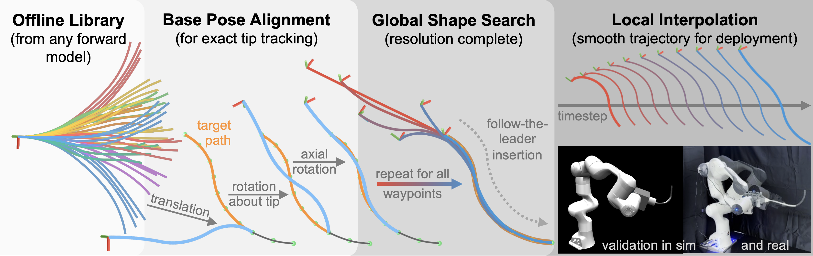

Sampling-Based Follow-the-Leader Motion Planning
for Manipulator-Mounted Continuum Robots
* Equal contribution
Continuum Robotics Lab · University of Toronto
 RSS 2026 · Sydney, Australia
RSS 2026 · Sydney, Australia

Abstract
Follow-the-leader (FTL) motion exploits the unique morphology of continuum robots (CRs) to navigate confined spaces by having the body retrace the path of the tip. While extensively studied, existing FTL methods typically assume a fixed base or a single degree-of-freedom insertion mechanism, limiting their applicability to practical systems in which CRs are mounted on robotic manipulators with full six-degree-of-freedom pose control. This paper presents a sampling-based motion planner for FTL motion of manipulator-mounted CRs that jointly considers robot configuration and base pose. The key idea is to decouple global shape search from base pose determination by computing the base pose through a closed-form geometric construction, thereby avoiding iterative optimization during online planning. The approach supports general forward models and enables efficient planning by shifting the majority of computation offline. We establish theoretical guarantees including resolution completeness of the shape search and exact tip tracking throughout waypoint traversal and interpolation. Experiments on 120 simulated paths over 3 test classes demonstrate 0% tip error and 1.9% mean shape deviation (w.r.t. robot length) at 100% success rate. We validate the practicality of our approach on a 6-DOF tendon-driven CR mounted on a serial manipulator.
Try the planner
The full sampling-based planner runs live in your browser via Pyodide. Drag in either viewer to orbit the camera; scroll to zoom.
- Pyodide runtime
- numpy / scipy / scikit-learn
- Planner source bundle
- Wiring up
1. Target path
Pick a shape, drag the sliders. Edits update both viewers live and reset any prior plan.2. Planner
Pick a planner + library, hit run, then play back the motion below.Run results
Citation
@inproceedings{shentu2026samplingftl,
title = {Sampling-Based Follow-the-Leader Motion Planning for Manipulator-Mounted Continuum Robots},
author = {Shentu, Chengnan and Baldassini, Nicholas and Iseoluwa, Oluwagbotemi D.
and Gondokaryono, Radian and Burgner-Kahrs, Jessica},
booktitle = {Robotics: Science and Systems},
year = {2026}
}